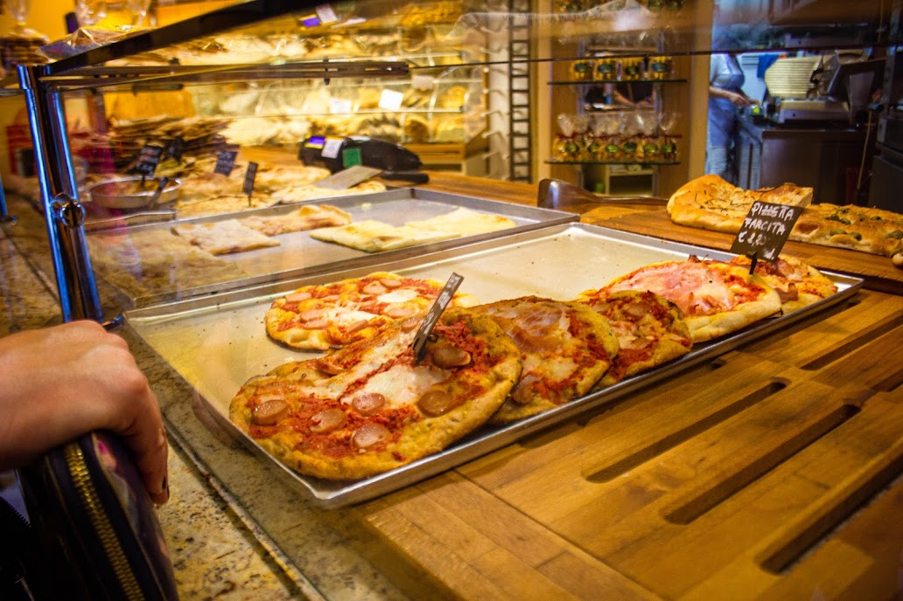

My everyday routine
Every morning I leave my home, which is located in the quiet center, and I can't wait to see what the day will be like. The morning may be quite cold, but I still enjoy the chirping of birds and the direct rays of the sun (when there are any), which give a golden hue to every historical building and tree in Riga. "Entering" the streets and parks of Riga, I put on my "shoes" of a student and city researcher and go forward. The noises, sights and even smells of the city become part of my day. My little husky is also part of this ritual - we spend the first hours of the morning together, often going to the nearest dog park. It helps me get energized and ready for the day. But no matter how exciting or exhausting the day is, I always know I have a home to come back to. Starting my daily route to the University of Latvia, I often meet neighbors who also go to solve their daily challenges. It reminds me that I'm not the only one enjoying this beautiful place. Forward!

Image: My husky girl - Maya enjoying a fresh morning, looking at the liveliness outside the window - in the city of Riga.
Neverending beauty of parks
For me, the parks of Riga are like green corridors along which I go through the city. They really resemble beautiful alleys that we can see in movies. In Kronvald Park, you can meet many dog owners with dogs of various breeds. In Bastejkalna, on the other hand, the decibels are already increasing, because people are running around, who are always in a hurry somewhere - I won't say where. The Opera Park has a slightly calmer atmosphere, probably because it has gone in (but maybe just because there aren't many cafes and shops around. It's interesting to see how the parks differ, but also - every time I walk through them, I appreciate someone beauty is right here in Latvia, in Riga. Not everywhere in the world is such a touch of nature in the very center of the capital. I imagine that in these parks 100 years ago people have enjoyed the same thing that I do now, of course, a little differently. Riga's parks are centuries old, and they are experienced the many changes of the city, which I think reflects part of Riga's cultural heritage. And most importantly, we, the people, residents - children, young people, families, students, are the ones who create this charming atmosphere in Riga's parks.


Image: Kronvalda Park, which never ceases to amaze with its all-season peace and beauty.
Architecture
Riga is a very rich city with its architectural pearls - it offers everyone a trip back in time. For example, the building of the Faculty of Biology, which sometimes looks abandoned at night, the palace-like design of the Riga State 2nd Gymnasium, which is by no means worse than the classic white architecture of the Riga State 1st Gymnasium, and the elegance of the "Rīdze" school makes me happy every day, because the architecture The center of Riga is not so industrial. All these buildings and monuments are a mixture of several centuries and styles - each building, bridge, road tells about its time and history. I can't imagine how many people, couples, families have walked around here and what emotions have been gained right at these buildings. What joy there has been in the eyes of the residents when these buildings have been unveiled. This living museum of architecture is not only a part of my daily route to Raina boulevard, but it also instills a sense of Latvianness and respect for the city's heritage. Historic buildings will never be replaced in my heart by modern and monochrome buildings. They are and will remain in my heart. It should be mentioned that the National Theater has a significant historical and cultural significance as the first professional Latvian theater institution - it symbolizes the country's cultural identity. Externally, this theater building stands out for its Neo-Renaissance style, which has ornate facades and very intricate details. Magnificently beautiful.


Image: The historic building of the National Theater, where various performances have been held for several decades.
What about coffee?
The coffee shops that are right next to my ikriti road offer a glimpse into the city's vibrant social life. Places such as the Bastejkalns lodge cafe and the Gascony cadets, filled with deep conversations, laughter and the rich smell of freshly brewed coffee, give me a very lively feeling of the spirit of Riga. Especially when coffee drinkers can be seen happily sitting at the golden tables outside, which are almost surrounded by the sun's rays. They are meeting places for students, tourists, and local residents, each contributing to the dynamic morning routine of Riga. While chain restaurants like McDonald's exist side by side, local coffee shops literally "steal the show" in my view with their unique charm, contributing to the city's warm, inviting atmosphere. In addition, cafes add charm and character to the city landscape, improve the overall atmosphere, and most importantly - create a sense of community. Here, people can get to know each other and have deep conversations about various topics, while they are envious of Riga's charming parks and ancient trees. The availability of cafes on this road to the University of Latvia encourages people to get to know and explore the environment that surrounds them. And who knows, maybe our paths will lead to a common goal in this way - to study at LU?

Image: What is the center of the capital without fantastically delicious meals and coffee?